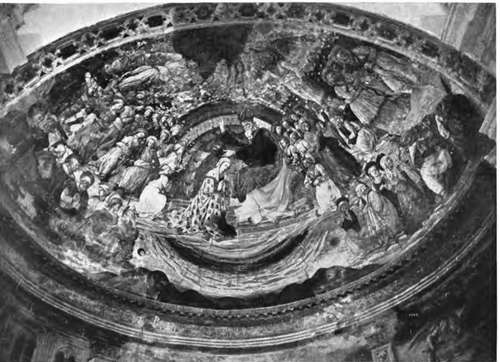

Fresco Painting. Part 3
Description
This section is from the book "Mural Painting", by F. Hamilton Jackson. Also available from Amazon: Mural Painting: -1904.
Fresco Painting. Part 3
Latilla's instructions as to the sequence of processes are interesting as showing how such things were done in his time. "In beginning large mural decorations the first step is to paint in all the ornament, it being easier to harmonise subject to ornament than ornament to subject; and arabesques form an excellent key for the tone and colour of the historical painter. This part completed, it is a good plan to fix the blank cartoons in their respective situations, and then sketch in the general design, as a better judgement of it can be formed when up." This must mean that spaces were left for the figure compositions, the rest of the wall, or ceiling, being covered with a more or less architectural framing of ornament. "When all the cartoons are painted with egg tempera, they should again be placed on the panels, when the full effect of the whole will be seen, which is especially necessary when different hands are employed. Alterations and improvements can then be suggested and the various cartoons harmonised to suit each other." This is a practice advocated by Mr. Armitage also, and one has no difficulty in realising the advantage of employing it "If possible, have the cartoon placed in situ, so that the size of the figures, the arrangement of the groups, and the general effect may be judged. Nothing which requires alteration should be left knowingly. Sim-plicity cannot be too much observed in the colouring as well as the design." Latilla goes on: "When the plan is fully arranged, and the panels prepared to all but the last layer of stucco by the plasterer, the painter may commence thus: a portion of the cartoon must be cut out, and the back of the outline blackened with charcoal, laid upon the piece of fresh plaster; a point having been passed over the outline, an impression will remain on the stucco (or it may be pounced)." " Semi-opaque tints scumbled over solid colour become very brilliant, the high lights should then be touched on. The whole should be kept low in tone, as the colour dries considerably lighter. Over the first layer of colour the touches are almost invisible for some seconds. Dark colours, if used first with white, should be glazed purely afterwards. Water sprinkled with a long soft brush on the stucco occasionally will prevent its getting dry too soon. Flesh should be painted at one time, drapery at another, and always so as to avoid seams in the lights, and where it would be difficult to unite the next part. Backgrounds, particularly skies of a large size, must be painted by two or three persons, the superintending artist directing and harmonising." Paillot de Montabert says of backgrounds that care must be taken to prepare enough colour for the whole surface, as the matching of tints is extremely difficult. Mr. Armitage says " Paint from the shadows to the lights. At the end of the day, when the surface is becoming too dry for solid painting, thin washes of colour may be used. The Italian 'terra rossa,' burnt sienna, raw sienna, and even vermilion may be of great service for glazings." He also describes another mode of painting in true fresco, in which the colours are used transparently throughout, and which he says, as far as his experience went, was more durable than the solid method. In this very fluid lime was floated over the intonaco as soon as it was sufficiently set, and after an interval of ten minutes another coat was given. "This smooths the surface. Pounce the outline. You have no palette, but half a dozen small tumblers. In one mix raw umber and oxide of chromium with water. Make two weaker tints from this in two other pots. This replaces the old terre verte. (Modern terre verte will not stand the action of lime.) Model your head from dark to light. Then take three clean tumblers and make tints of light red or terra rossa, adding raw sienna for a bronzed complexion, and tint over the completed modelling. Then with a small brush and burnt sienna or burnt sienna and umber strengthen the darkest parts, such as nostrils, division of the lips, etc., and add black for eyebrows or eyelashes if required. There are none of those capricious changes to fear in this process, which constantly occur when lime is used as pigment".
CORONATION OF THE VIRGIN.
In the apse of the Cathedral, Spoleto; Fra Filippo LippVs last work.
In the time of Cennini a shaded monochrome was first painted. The flesh and the hair were outlined with sinopia (light red) on the rough plaster, and then the thin lime surface plaster spread, only covering as much as could be painted in a day. It was made as smooth as possible by what would now be called water-polish. A strong outline was then painted on the white surface with " verdaccio," which was made of black, dark ochre, light red, and white. Then the shadows were put in with terre verte and flesh colour in three tints of light red and white carefully added over the underpainting. "With the darkest tint go to the edge of the shadows, but always taking care at the contours that the terra verde should not lose its value." "Verdaccio" was also used for under-painting draperies, buildings, and other parts, and sometimes the terre verte was used over the flesh tint. Care was taken to lay every tint in its right place, so that only a little softening and blending was required to complete the effect.
The brushes should be of hoghair, either flat or round, but with long hair so as not to disturb the surface of the plaster, and a few brushes made of otter hair may be used for small touches; no other hair will resist the action of the lime. The palette should be either of porcelain or of tin, in the latter case it may be protected from rust by a light-coloured varnish. Latilla recommends the use of earthenware cups to hold the colours. If the palette is of tin it should have a rim round it to prevent the colours from running off.
Continue to: